Sensor Batch Upgrade Guide
This article will use two TS302 V2 devices with firmware version v1.1 as an example to guide you on how to use the upgrading tool to perform a batch firmware upgrade, updating both sensors to standard firmware version v1.2
Two Required Software：
① port_and_path_tool_v3.1.exe
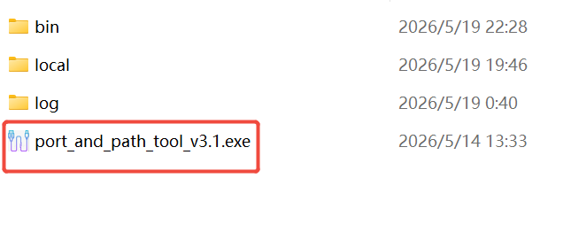
② iot_sensor_stock_dev_upg_tool_v3.1.1-nodb-a9.exe
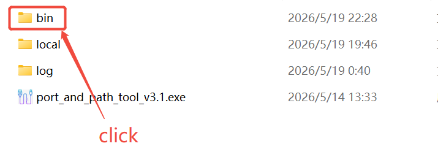
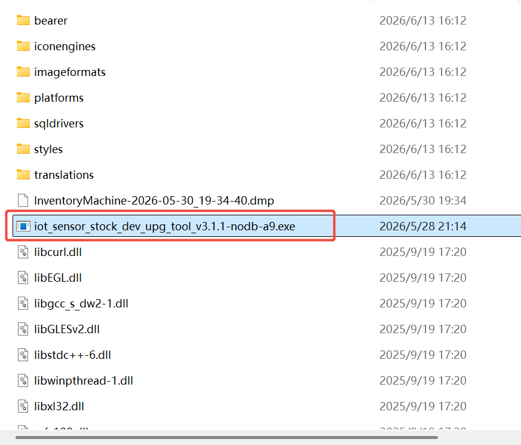
Step 1: Please place the TS30x V2 devices that are scheduled for bulk firmware upgrade on the desktop.
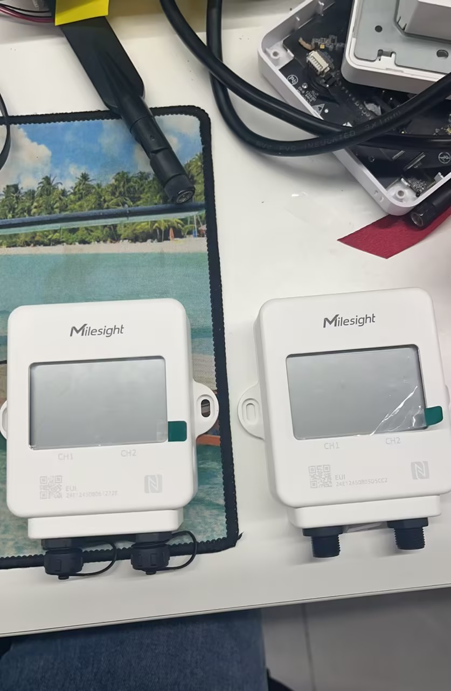
Step 2: Connect the 10-port USB hub with DC power supply to your computer.
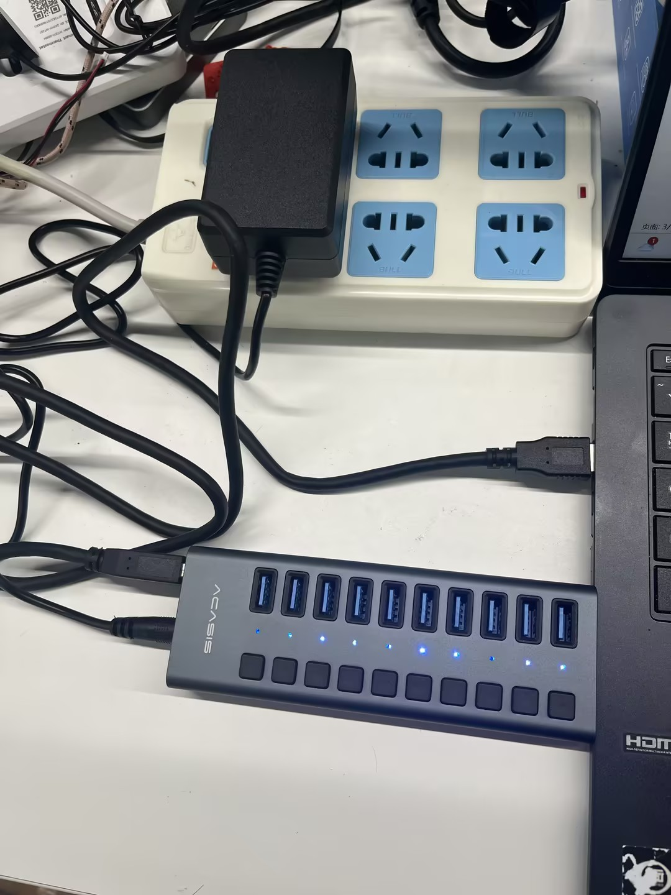
Connect each of the two NFC panels with a separate USB-C cable. To fix the NFC panels onto the NFC module area of the TS30x V2, you may apply double-sided tape to the panels.
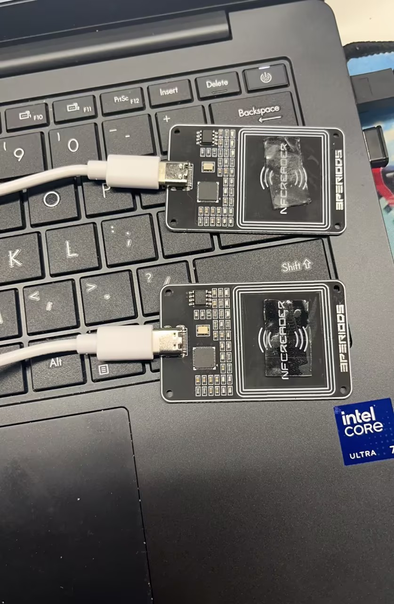
The following image shows the NFC area of the TS30x V2. Please affix the NFC panel, which has double-sided tape applied, to the NFC area of the TS30x V2 as illustrated below.
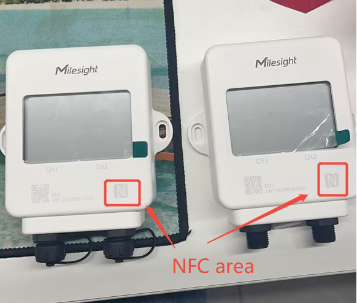
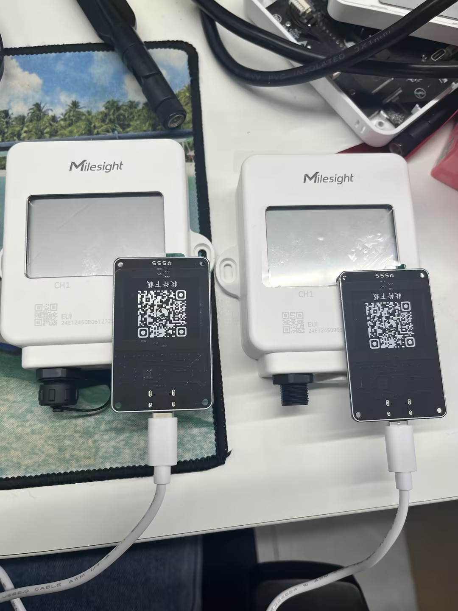
Step 3: Open the port_and_path_tool_v3.1.exe program. Then, insert each USB cable connected to an NFC daughter board into your USB hub one by one. Each time you insert a USB cable into the USB hub, you will receive a COM port value.
As shown below, when I insert these two USB cables into my USB hub, I get two COM port values. If you insert 10 USB cables (each connected to an NFC board) into your USB hub, you will get 10 COM port values.
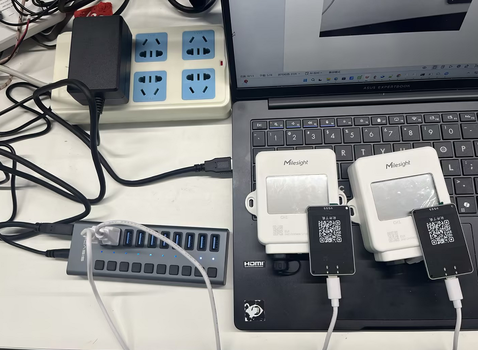
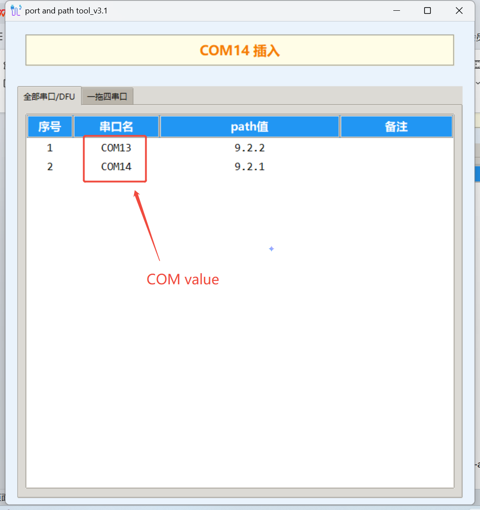
Step 4: Launch the iot_sensor_stock_dev_upg_tool_v3.1.1-nodb-a9.exe program. Click the "port mapping" button, fill in the two COM port values obtained in Step 3, and then click "save" to store the configuration, as illustrated below.
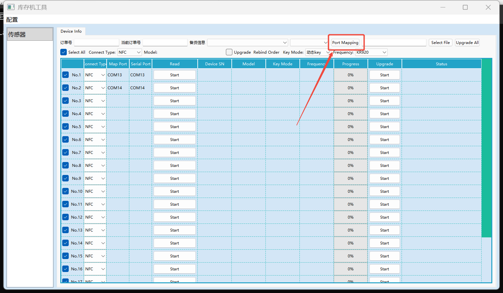
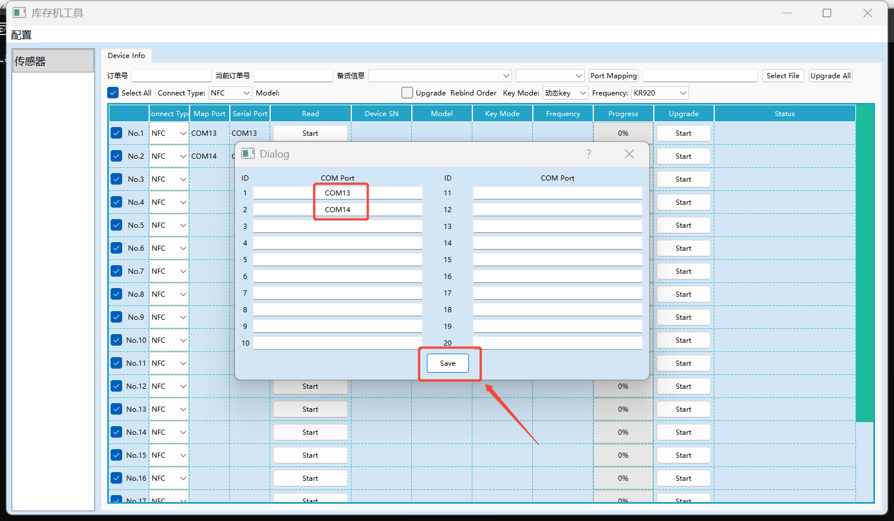
Step 5: Click "Select File" to upload the firmware you want to use for the upgrade. In this test, I uploaded the v1.2 firmware of TS30x V2, as shown below.
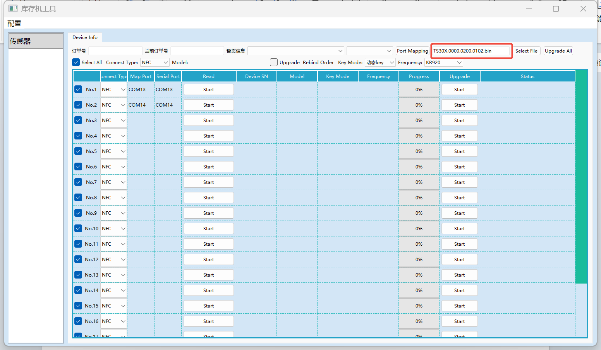
Step 6: Click the "Upgrade All" button to upgrade the firmware of all TS30x V2 devices currently connected to the USB hub simultaneously. All devices will be upgraded to the v1.2 firmware.
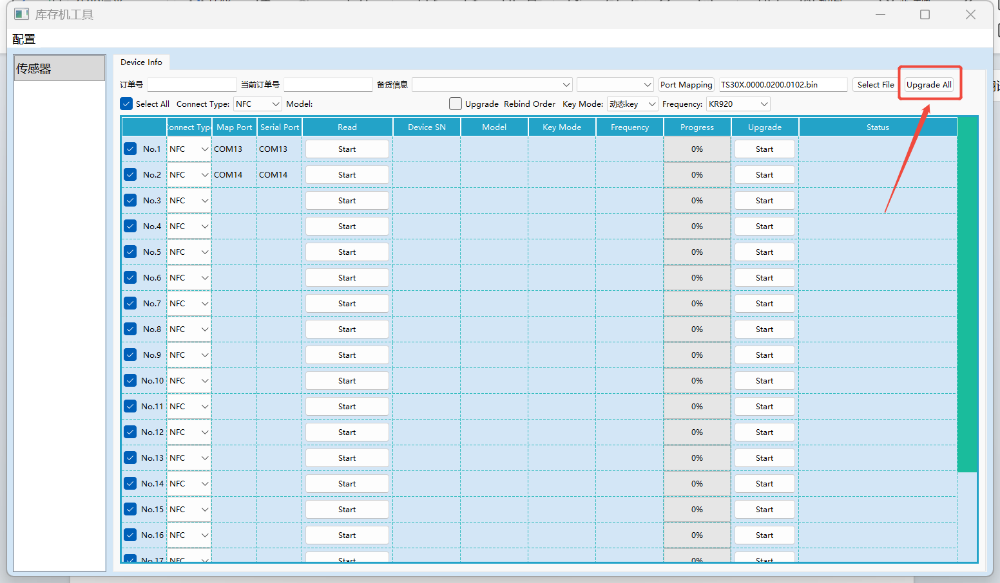
Step 7: After you click "Upgrade All," all TS30x V2 devices will enter the "Upgrading" status, as shown below.
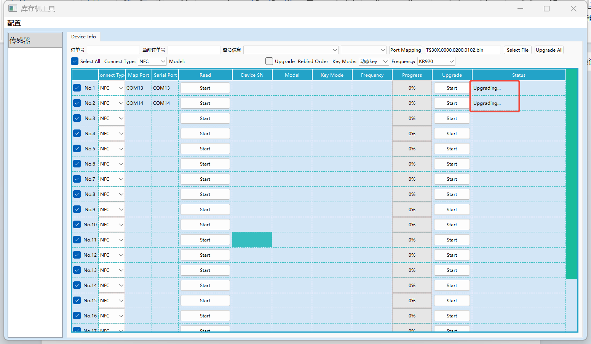
If the devices are in the process of upgrading, you will see the progress bar changing, as shown below. If any device does not enter the "Upgrading" status and its status shows an error message, it means that the upgrade for that device has failed. For devices that failed to upgrade, you need to wait until all other devices have finished upgrading before attempting to upgrade them again. Once the TS30x V2 enters the upgrading state, please do not interrupt the process; otherwise, your device may encounter issues.
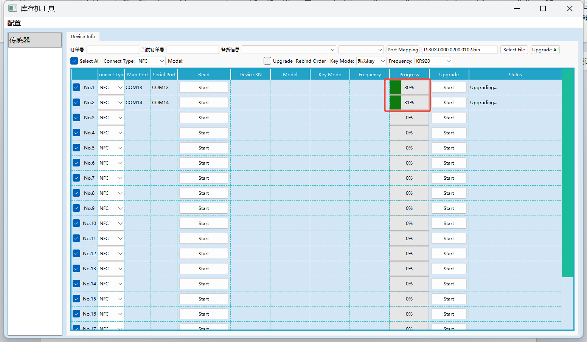
When the firmware upgrade is completed, you will see the device status as "Upgrade success," as shown below. This indicates that both of my TS30x V2 devices have been successfully upgraded to the target firmware (v1.2).
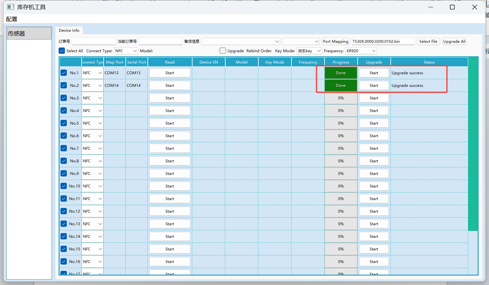
You can use the mobile version of ToolBox or directly use the NFC function of the PC version of ToolBox to check whether the device has actually been upgraded to v1.2.
To read the device information of the TS30x V2 using the PC version of ToolBox, simply select "NFC" as the reading type when launching the software, and make sure that the selected COM port corresponds to the one connected to the TS30x V2. As shown in the figure below.
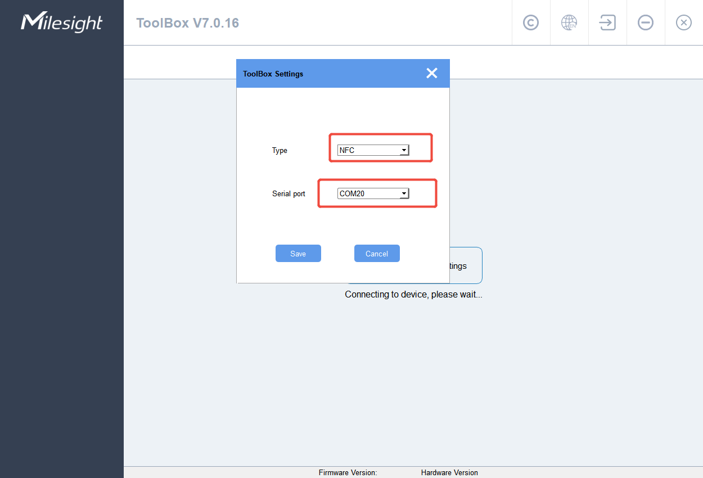